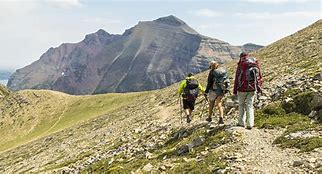

Amuay Wildlife Park: Unforgettable Activities Await
Explore the Diverse Landscape:
- Forest Trails: Immerse yourself in the tranquility of the rainforest by venturing onto our well-maintained forest trails. These self-guided pathways wind their way through various ecosystems, offering glimpses of diverse flora and fauna. Be sure to download our interactive map to guide your exploration.
Guided Hikes:
- Guided Hikes: Embark on a guided hike led by our knowledgeable park rangers. They will share fascinating insights into the park's ecology, pointing out hidden gems and sharing captivating stories about the resident wildlife. Choose from various hike options, catering to different difficulty levels and interests. Learn more.

Guided Tours:
- Guided Tours: Delve deeper into the park's history, conservation efforts, and fascinating wildlife through our guided tours. Choose from specialized tours catering to specific interests, such as birdwatching, photography, or exploring specific ecosystems. Learn more.

Engage Your Inner Learner:
- Educational Programs: Participate in our engaging educational programs. Choose from workshops, lectures, and field studies focusing on various aspects of the park's biodiversity and conservation efforts.

Plan Your Visit:
-
Visitor Information: Before embarking on your adventure, be sure to visit our visitor information page. Here, you'll find details on park rules, entry fees, opening hours, and directions. Additionally, discover information about:
- Accommodation options
- Transportation details
- Hiking tracks and running tracks
- Exercise areas
- Best photo stops